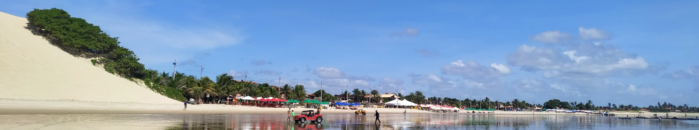
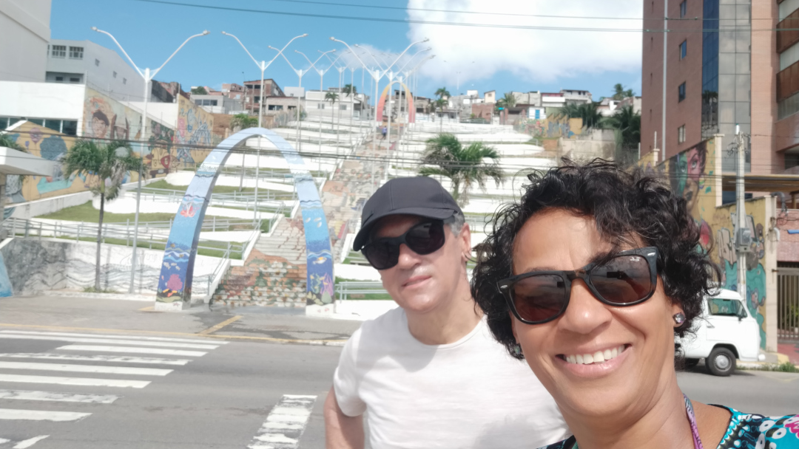
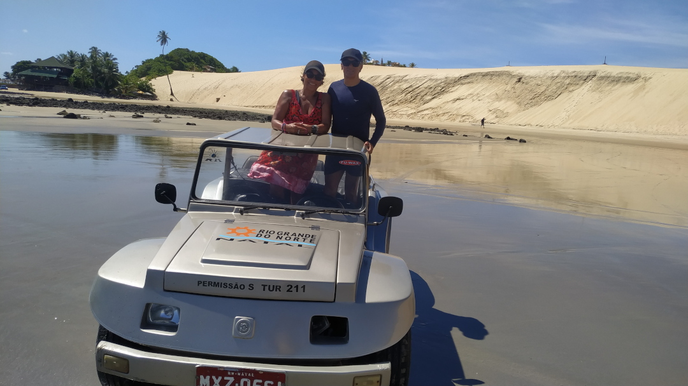
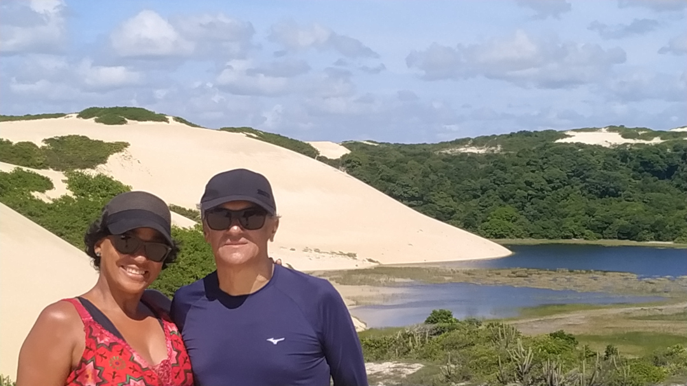

Segundo roteiro da viagem de 2024
Saímos de Fortaleza por volta da 22 horas para Natal, uma viagem curta mas para mim um pouco incômoda, apesar do ônibus ser confortável, não me preparei para o ar condicionado que estava muito gelado, estava um pouco cansado queria dormir mas não consegui, na primeira parada desci e pedi para o motorista abrir o bagageiro para que eu pegasse roupas para me aquecer e solicitei que aumentasse o ar, quando ia pegando no sono, chegou na segunda parada ai despertei de vez e não dormi, chegamos cedo e ficamos pela praia até o horário de almoço depois fomos para o Hotel.

Escadaria de Mãe Luiza
O nome da escadaria homenageia Mãe Luiza, uma figura famosa por suas ações benevolentes e religiosidade afro-brasileira. A área pode ser um refúgio para práticas religiosas que, no passado, eram proibidas. Após um deslizamento de terra em 2014, a escadaria foi reconstruída e hoje simboliza a renovação e a força da comunidade local.

Passeio de Buggy
Praia Barra do Rio no Município de Extremoz localizada no foz do Rio Ceará-Mirim, fizemos a travessia do Rio Por Balsa

Nas dunas
Nas fotos, não dá para ver as dunas nas quais realizamos o passeio. O bugueiro perguntou se queríamos com ou sem aventuras. Só eu preferi sem, mas fui vencido. No entanto, foi o melhor roteiro que já fiz de buggy. Foi realmente assustador, chegava a faltar o fôlego, mas não dava tempo de pensar. Já despencava numa vertical e, em seguida, percorria o paredão da duna na horizontal, parecendo uma centrífuga. Me diverti pra valer